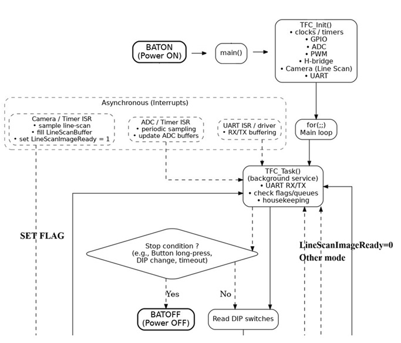
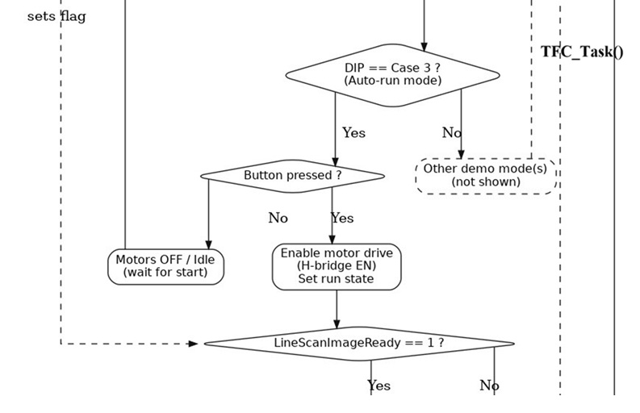
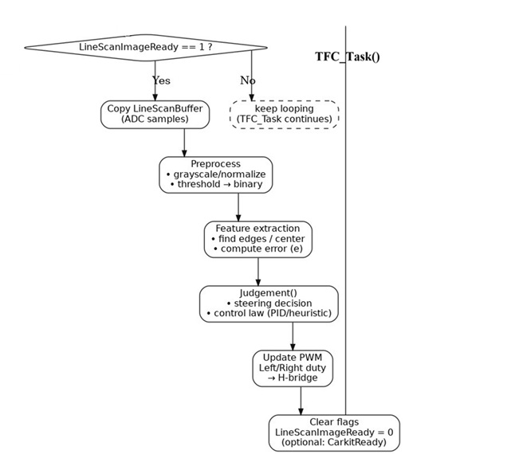

自走車循線系統
本專題為大學時期完成之自走車循線系統， 透過影像感測與控制邏輯，使自走車能穩定沿著軌道行進並完成轉向。
循跡自走車
系統架構圖I

電池上電後，進到主程式中，初始化TFC相關之ADC、UART、PWM...等周邊，
偵測開關是否開至case3，進入後先使鏡頭做初始化校正，判斷黑線及白底，
接收外部中斷給予的LineScanImageReady及CarkitReady是否皆為1。
系統架構圖II

系統以 Freescale KL25Z 作為主控制器，
負責影像資料判斷、轉向邏輯計算，以及伺服馬達與直流馬達控制。
校正完畢後，啟動直流馬達LineScanImageReady及CarkitReady是否皆為1，
皆為1則進入Judgement()，進行車子與鏡頭的角度補償和加速/減速修正。
系統架構圖III

透過影像辨識取得軌道位置，
進行左補償或是右補償的車身位置調整，
每更新完後會將LineScanImageReady清0，
待重新接收到新的128筆線資料，再將其設為1，
系統即時計算偏移量並調整前輪轉向角度；
當偵測到彎道時，會同步降低後輪馬達輸出以提升穩定性。